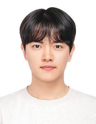
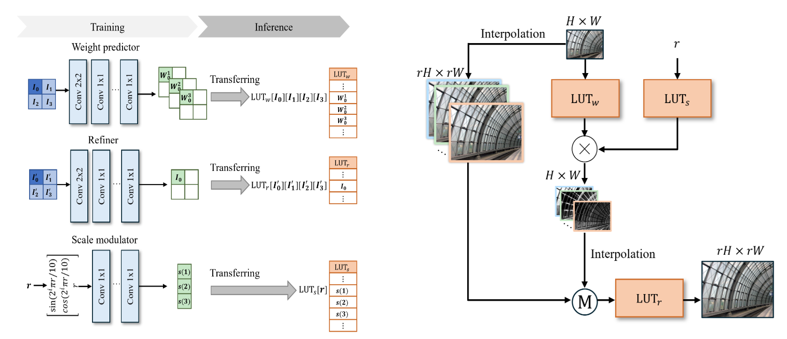
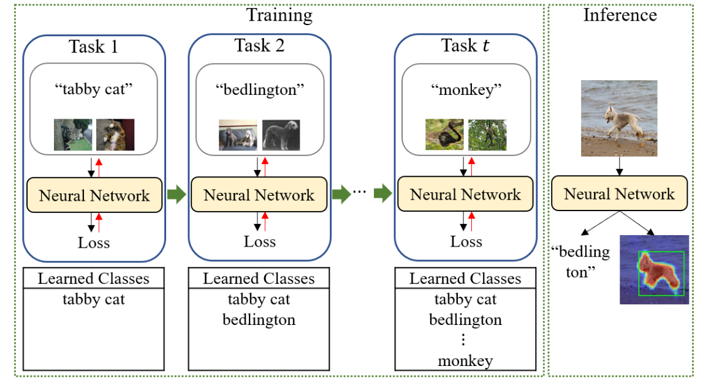

01
Efficient AI
Inference-efficient models, data-efficient learning, hardware-aware models, and logic-based neural networks.

Ph.D. Student · Korea University
Department of Electrical and Computer Engineering
Korea University, Seoul, Korea
I am a Ph.D. student in Electrical and Computer Engineering at Korea University, advised by Prof. Seung-Won Jung. I am interested in making neural networks more efficient, from inference- and hardware-efficient architectures to practical vision systems for image restoration and camera ISP.
My research spans efficient neural architectures and low-level computer vision.
Inference-efficient models, data-efficient learning, hardware-aware models, and logic-based neural networks.
Image restoration and camera ISP, with an emphasis on computationally efficient image processing.
Selected publications and the main ideas behind each work.
Can LUTs alone enable arbitrary-scale super-resolution?
Learn interpolation mixing weights and convert them into LUTs for efficient arbitrary-scale super-resolution.
Enables continuous-scale super-resolution while retaining efficient LUT-based inference.
IEEE/CVF International Conference on Computer Vision (ICCV 2025)

Can weakly supervised localization learn new classes without forgetting previously learned localization knowledge?
Compensate feature drift caused by class-incremental learning to preserve localization capability across sequential tasks.
Maintains localization knowledge while progressively learning new object classes.
ACM International Conference on Multimedia (ACM MM 2023)
* Equal contribution

Sejin Park and Seung-Won Jung
ISBN: 9791175000766
Sejin Park and Seung-Won Jung
KR Application 10-2025-0104234
National Research Foundation of Korea (NRF)
National Research Foundation of Korea (NRF)
National Research Foundation of Korea (NRF)
National Research Foundation of Korea (NRF)
National Research Foundation of Korea (NRF)
Institute for Information & Communications Technology Planning & Evaluation (IITP)
National Research Foundation of Korea (NRF)
Electronics and Telecommunications Research Institute (ETRI)
Korea University
Advisor: Prof. Seung-Won Jung
Seoul National University of Science and Technology
Advisor: Prof. Byeongkeun Kang